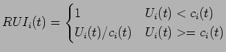

Reinforcement learning techniques involve learning policies for state-space problem solving. For each state the policy determines the action to perform. While learning, the system receives a reinforcement signal or reward after each action. The goal is to find an optimal policy which maximizes the expected cumulative reward over future action. In scheduling, the policy tells us how (what scheduling action to perform) to maximize some measure of schedule quality in the final realized schedule.
Motivated by the myopism of local despatching rules which lead to supboptimal global behaviour, [Riedmiller and Riedmiller, 1999] have studied the use of RL techniques to learn despatching rules which adapt dynamically using feedback from the evolving problem situation. The problem is represented as an MDP where represents the allocation of tasks to resources at time  and represents the selection of the next job to allocate. Individual Q-learning agents with local state and action knowledge are associated with each resource. They used an MLP to represent the value function, taking as inputs a number of problem features culled from the problem space (set of unallocated tasks). These include features relating to the current schedule state:- tightness with respect to due dates, estimated tardiness, estimated makespan, average slack, and features dependant on the next job selection such as:- average remaining slack if is selected, relative slack (
). By varying the set of input features selected to match those of standard despatch heuristics (EDD, SPT, LPT, FIFO, MinSlack) they were able to train the network to produce despatch policies which met or exceeded the performance of these heuristics on problems to which the specific heuristics were best suited. By combining sets of input features they were also able to outperform all of these despatch heuristics on a variety of problems. In effect the network was able to learn better policies by combining the standard heuristics depending on the problem features. When applied to untrained problems the network was able to successfully generalize and improved significantly on each of the standard despatch policies.
and represents the selection of the next job to allocate. Individual Q-learning agents with local state and action knowledge are associated with each resource. They used an MLP to represent the value function, taking as inputs a number of problem features culled from the problem space (set of unallocated tasks). These include features relating to the current schedule state:- tightness with respect to due dates, estimated tardiness, estimated makespan, average slack, and features dependant on the next job selection such as:- average remaining slack if is selected, relative slack (
). By varying the set of input features selected to match those of standard despatch heuristics (EDD, SPT, LPT, FIFO, MinSlack) they were able to train the network to produce despatch policies which met or exceeded the performance of these heuristics on problems to which the specific heuristics were best suited. By combining sets of input features they were also able to outperform all of these despatch heuristics on a variety of problems. In effect the network was able to learn better policies by combining the standard heuristics depending on the problem features. When applied to untrained problems the network was able to successfully generalize and improved significantly on each of the standard despatch policies.
Though possible to engineer domain-specific heuristics by hand to exploit regularities and features of a problem space, this can be time consuming and expensive and is naturally non-general. This was the motivation for [Zhang and Dietterich, 1995] who have studied the use of RL techniques to learn heuristics. Using a
based technique in which the value function is represented by the weights in a feed-forward network, the reward at each learning step  is computed as the summed relative utilization index (RUI) for each resource at that time step (latex doesnt like this eqn so left out for now).
is computed as the summed relative utilization index (RUI) for each resource at that time step (latex doesnt like this eqn so left out for now).
|  | (4) |
Their system models an iterative repair technique. The states represent the constructed schedule at a point in a sequence of repairs to obtain an optimal schedule and the actions are selected from a set of repair operations. They use a number of features extracted from the partial schedule at each learning step as inputs to the NN and this is used to estimate the value function. In tests against an iterative repair technique empolying stochastic search via SA [Zweben et al., 1994] the system was able to learn a repair policy after training which beat the IR technique consistently for speed though the IR technique was able to produce better schedules given sufficient time.
In dynamic systems [Shaw et al., 1990] hypothesise that the rules used to make scheduling decisions should change with time as the problem characteristics evolve. They proposed a system which distinguishes between and ranks problem characteristics by relative importance, then performs adaptive scheduling by opportunistically selecting appropriate heuristics.
The system called Pattern Directed Scheduling (PDS) works in 2 stages. In the first step (learning stage) a series of training scenarios are simulated and used to study the effects of applying various despatching rules. A critic module (the expert) analyses the performance of these rules on the problem scenarios and may generate new training examples to refine the matching of patterns to rules. The system chosen for induction was based on Iterative Dichotomizer 3 ID3 [Quinlan, 1986], in this system a tree of rules is built up by splitting the domains of the problem attributes (summary explanation in Hopgood KBS for E and S).
An effect of this system is that it ranks the attributes in terms of an entropy - how much does attribute contribute to the knowledge used to make a given decision ?. This has the advantage of allowing us to see which attributes are important and which are irrelevant or decision-neutral but does have the disadvantage of considering each attribute in isolation and is unable to detect interdependancies between attributes. A typical example being where a decision should be made based on the similarity of 2 attributes rather than their individual values. Shaw et al used a total of 9 problem attributes and found that 2 of these were irrelevant.
They found that when applying the learnt rules to real problems it was important to reduce the nervousness of the system. As the characteristics changed it was neccessary introduce a smoothing component to avoid switching rules too quickly by waiting until the selection count of a new rule had reached a threshold value. They tested the system against a number of standard despatching rules with a collection of problem instances and concluded that there was an overall improvement of around 11.5% in mean tardiness compared to the best of the single rules applied to any of the problem sets. The improvement was atrributed to the adaptive selection of rules and the ability to use feedback to refine the heuristic selection.
Case based reasoning (CBR) is a learning technique in which rules are induced by matching problem situations against a set of examples (the cases). It has several advantages:- CBR is particularly useful at extracting rules from noisy data, it operates incrementally building up its knowledge base while working (there is no large expenditure of effort at the start of the process or any need to check consistency between rules as in a rule-based learning), contextual information may be retained in the cases to help human assessors to understand the induced rules.
Due to their interactions and conflicts, it is often difficult to determine numerically or in terms of hard-and-fast rules, the relative ranking and trade-offs between users' schedule optimization preferences. The CABINS system [Miyashita and Sycara, 1995] uses CBR to capture these preferences. CABINS provides a framework for acquiring preferences then uses the case base to improve schedules and provide a reactive repair mechanism in response to unforseen events.
The system operates in 2 stages:-
CABINS has 3 operating modes:-
Selection of repair actions is performed by matching the problem profile against the stored cases using a -nearest neighbour matching algorithm:-
| (5) | |||
| (6) |
The repair process operates as follows:-
Compared with SA based IR scheduler. Found that 1000 cases was optimum - marginal improvment above 1000 was not worth the effort. They concluded that CABINS was good at capturing preferences and optimization trade-offs that are difficult to model, improved schedule quality irrespectively of how the initial (seed) schedule was generated and produced high quality schedules faster than simliar IR technique so was suitable for reactive scheduling.
NOTE (need to read that paper again as the repair/CBS intervleaving technique does not seem quite right.
[Sycara et al., 1995] extended the CABINs framework to consider time-varying user preferences. Their extension allowed the system to learn new cases from its own evaluations of schedule improvment while running. They employed a rolling horizon model in which the matching algorithm gives more weight to recent cases than to older cases.
Some techniques involving learning despatch rules/priority weights GEN-H [Morris et al., 1997].